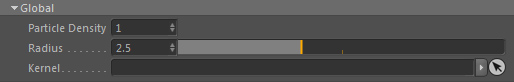

Global

A lot of particle algorithms require particle density information. Density in this case doesn't mean the density of matter but
how many particles are near to each other.
If one particle has a high particle density it therefore means it is surrounded by a lot of particles (e.g. particles inside of a liquid body).
A particle with only a few particles surrounding it has a low particle density (e.g. particles at the liquid body surface).
When particle densities are calculated, they also may need to be normalised (so brought into the range between 0.0 and 1.0).
In order to do that a maximum particle density value is required which is pre-calculated (for performance reasons) by the Effex Scene.
Use the following settings to control the maximum density calculation.
Note: The POP::Volume Properties node is currently the only node using this feature. Optimally you want it to orient its settings on the ones here.
Particle Density
This sets the default particle density exponent which defines the spacing between particles.
By default it is 1 which means the spacing between particles is assumed to be half a voxel size (1/(2¹)).
A value of 2 assumes the particle spacing is a quarter of a voxel size (1/(2²)) and so on.
The default value of 1 does generally not need to be changed because most algorithms use it (FLIP,SPH etc).
So only change it if you know exactly what you are doing.
Radius
The radius used to search for neighboring particles in the vicinity of a particle. This is given in voxels.
Higher values will include more particles in the calculation (which results in smoother values) but will also slow down calculations.
Usually values between 1.2 and 3.0 make most sense.
Kernel
By default a cubic kernel (=falloff curve) will be used for weighting neighboring particles.
Here you can define a custom kernel.